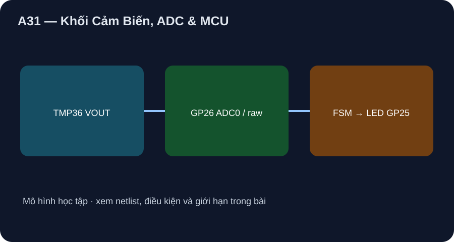

Khối Cảm Biến, ADC & MCU
Đổi raw thành nhiệt danh định, giữ hysteresis và kiểm ngân sách sai số theo giả định.
- Tính raw/T_est từ VOUT TMP36 bằng API MicroPython và phân biệt 12 bit silicon với 16 bit API.
- Kiểm trace LED on/hold/off từ mã đã lượng tử hóa.
- Lập ngân sách sai số giả định và phiếu validation độc lập, không gắn accuracy đo thật.

Đọc hình bằng chữ
TMP36 phát VOUT analog tới GP26 ADC0; mã read_u16 và VREF giả định tạo nhiệt danh định. FSM bật LED GP25 khi từ 30 độ C trở lên, tắt khi từ 28 độ C trở xuống, giữ trạng thái ở giữa. Log raw, nhiệt và trạng thái. Không có sensor thứ hai hoặc bộ chuẩn.
1. Schematic và BOM giữ đúng ranh giới
B1 Pico non-W pin 36 cấp U1 TMP36GT9Z pin 1; U1 pin 2→B1 pin 31 GP26/ADC0, U1 pin 3/C1→B1 pin 33 AGND; C1 0,1 µF sát U1. Fig. 4 ADI nhìn từ đáy. LED GP25 thuộc board, không lộ ở header. MicroPython RP2 quick reference v1.26 dùng ADC(Pin(26)).read_u16(). API trả 0…65535 nhưng RP2040 ADC silicon là 12 bit; mã API không chứng minh 16 bit accuracy.
2. Phép tính và ngưỡng
Theo ADI TMP36 Rev. H, V=0,500+0,010T danh định. Mô hình host dùng 3,300 V chính xác: tại 25 °C, V=0,750 V→raw=14894→T_est≈24,9984 °C. Nếu T_est≥30 thì on; ≤28 thì off; ở giữa giữ. Mẫu kích thích 30 °C lượng tử thành 29,9986 °C nên chưa bật. Trace tám mẫu [25,29,30,31,29,28,27,31] °C là LED 0,0,0,1,1,0,0,1. Chạy python tools/verify_phase9_sensor_lab.py để kiểm fake ADC/LED; đó không đo ADC thật.
3. Ngân sách sai số có nhãn giả định
Giả sử VREF lệch +1% mà phần mềm vẫn dùng 3,300 V, tại VOUT≈0,75 V thành phần sai lệch có cỡ 0,75 °C; nửa bước ADC 12 bit lý tưởng là 3,3/4096/2/0,010≈0,0403 °C. Đây là giả định và lượng tử lý tưởng, chưa gồm sai số sensor theo grade/điều kiện, phi tuyến ADC, nhiễu, tự gia nhiệt và chuẩn nhiệt. Không cộng thông số typical thành mức bảo đảm. Bước đo thật: raw/VREF/VOUT/chuẩn ở 27–31 °C theo hai chiều, kiểm điểm validation độc lập và log T_est−T_chuẩn. Chưa có phép đo đó.
Xem hồ sơ bốn chặng và lab P9-04 để đọc BOM, netlist, bảng đo và giới hạn. Hình A29–A32 là sơ đồ khối tự vẽ, không là sơ đồ CAD/ERC, layout sản xuất hoặc phép đo board.
Tính VOUT và mã API danh định tại 25 °C; giải thích vì sao kích thích 30 °C có thể chưa bật LED; dự đoán trạng thái ở 31→29→28 °C; nêu ba nguồn sai số không có trong mô hình.
- 2 điểm: 0,750 V, raw 14894, T_est≈24,9984 °C theo VREF 3,300 V.
- 2 điểm: 30 °C thành 29,9986 °C sau lượng tử nên chưa vượt ngưỡng; chấm theo T_est.
- 2 điểm: 31 bật, 29 giữ bật, 28 tắt theo mã thực của kịch bản.
- 2 điểm: VREF/ADC/sensor/chuẩn nhiệt/tiếp xúc hoặc noise chưa kiểm.